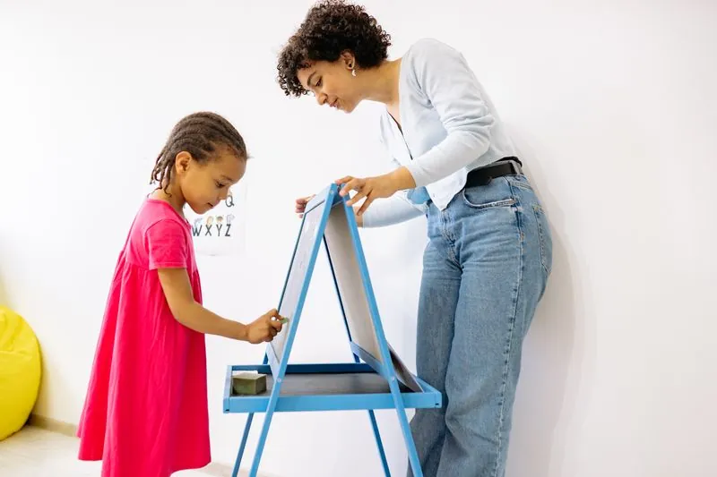

Kurikulum Nasional
dan Internasional
Dua kurikulum, tiga core values.

Dua Kurikulum Berjalan Bersama
Kurikulum Nasional dan Pearson Edexcel iPrimary.
Kurikulum Nasional
Memastikan standar kompetensi dari Kementerian Pendidikan Republik Indonesia terpenuhi, termasuk nilai kebangsaan dan Bahasa Indonesia.
Pearson Edexcel iPrimary
Kurikulum Pearson Edexcel iPrimary berbahasa Inggris untuk mata pelajaran English, Science, dan Computing.
5 Sisi Perkembangan Si Kecil
Kelimanya dilatih bersama.
Intelektual
Sains, logika, matematika, dan bahasa.
Emosional
Mengelola perasaan dan tidak mudah menyerah.
Spiritual
Nilai moral dan kejujuran.
Sosial
Berkolaborasi dan peduli pada teman.
Fisik
Kebugaran dan motorik si kecil.
Kegiatan Belajar Sesuai Jenjang
Kegiatan belajar disesuaikan dengan usia si kecil.

Preschool & Kiddy
Si kecil melatih motorik dan bahasa, serta eksplorasi lewat metode Learning Corner (Prof. Lin Pei Rong).
Primary School
Belajar dengan Pearson Edexcel iPrimary, serta Framework Singapura untuk Matematika dan Six Elements of Teaching dari Dr. Yeap Ban Har.
Pendekatan Pembelajaran
Framework Singapura untuk Matematika
Matematika memakai Framework Singapura untuk Matematika dan Six Elements of Teaching dari Dr. Yeap Ban Har: Exploration, Structured Discussion, Polishing, Key Question, Turning Point, Summing Up.

Metode Learning Corner
Metode Learning Corner dari Prof. Lin Pei Rong. Kelas KB dan TK punya beberapa mini corner, tempat si kecil eksplorasi sesuai minatnya.

Keterampilan 4C
Murid dilatih Critical Thinking, Creativity, Collaboration, dan Communication.
Pengembangan Profesional Guru
Pengembangan profesional guru berkelanjutan melalui pendekatan lesson study.
Peningkatan kualitas pengajaran yang berkesinambungan.
Tiga Core Values
Budi Pekerti, Trilingual, dan STEAM.
Informasi Kurikulum
Hubungi tim kami untuk info mata pelajaran.